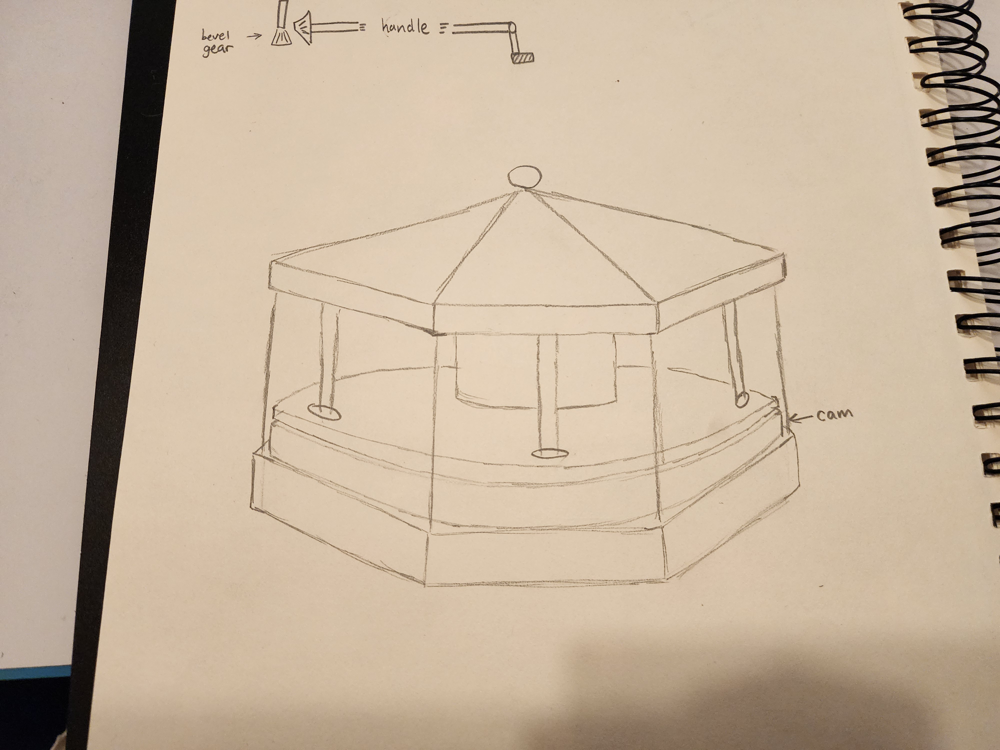
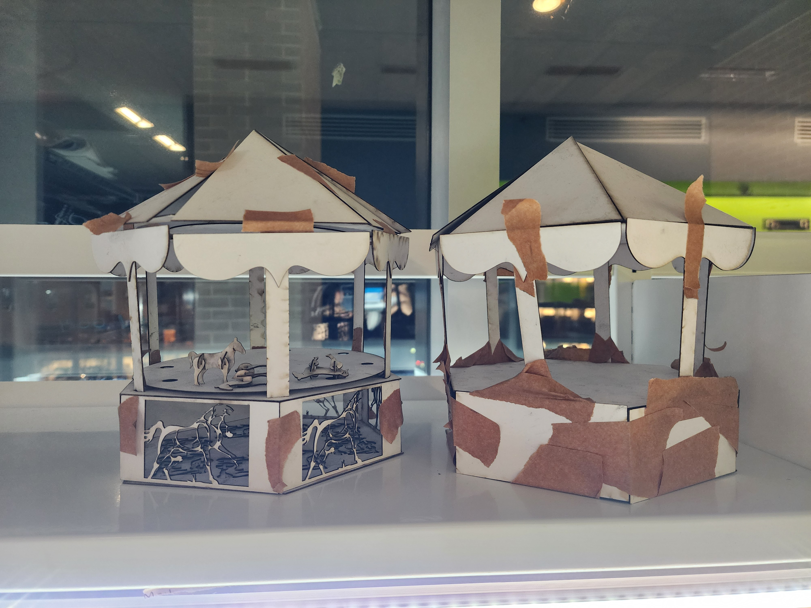
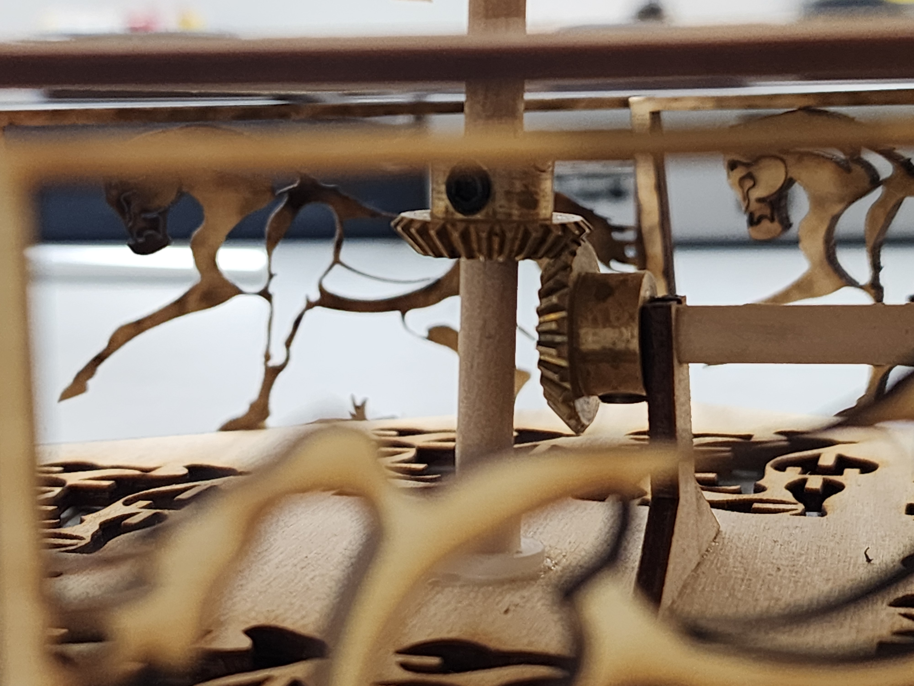
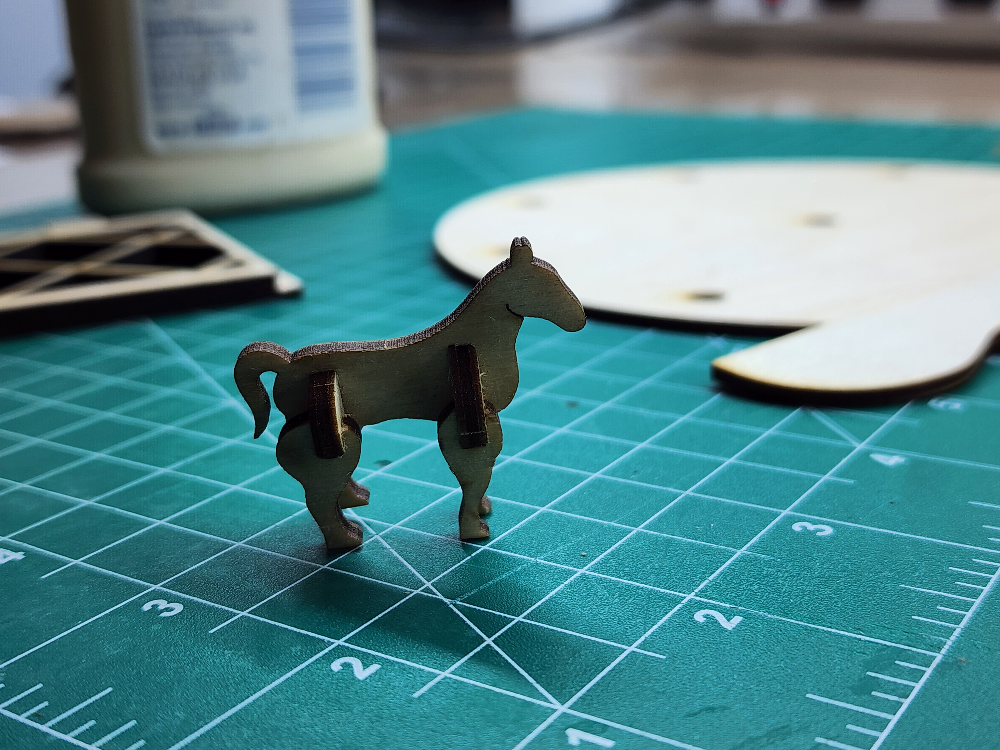

The constraints
- Thin stock. Use 1/8-inch plywood without splitting it during assembly.
- Shaft alignment. Support the shafts at the right angle and spacing for the bevel gears to mesh.
- Assembly fit. Account for differences between modeled dimensions and the cut or printed parts.
Design decisions
Check the layout with simple models
Concept sketches and chipboard prototypes explored the carousel’s size and the space needed for its moving parts before the final components were made.
Adjust the shaft supports
Small spacing errors caused the gears to bind. Shaft-support hole dimensions were adjusted in Onshape Variable Studios, and dry-fit subassemblies were used to check the fit.
Simplify the motion
An early multi-axis cam concept introduced too much friction. The design was simplified to a bevel-gear rotational system, narrowing the focus to making that motion work.








The outcome
The finished carousel turned through the hand crank and bevel-gear pair. Adjustments to the shaft supports and assembly fit allowed the mechanism to operate as a complete physical build.
What I learned
This project showed me that a constrained CAD assembly still needs careful fitting in the shop. I would account for material variation earlier and use an alignment fixture when assembling a similar mechanism.